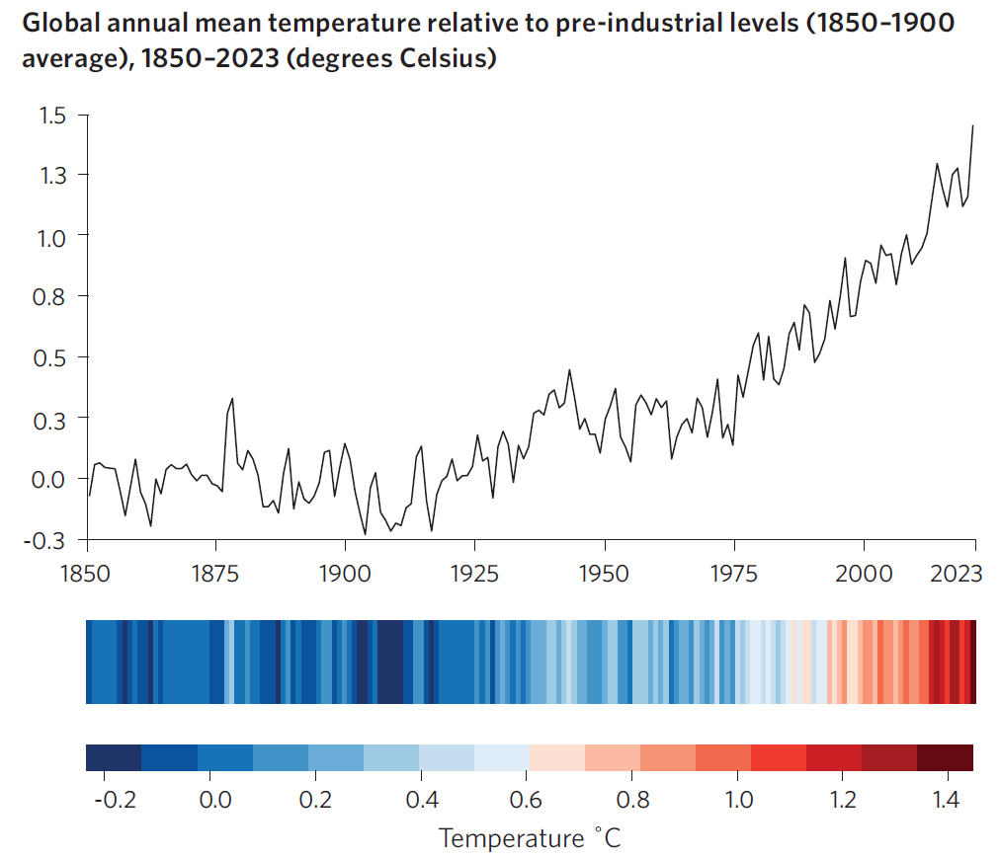

Project pitch by Julie Hallez


Tout le monde le sait : 3 degrés quels sont les scénarios possibles en fonction des features entrainer différents modèles omprendre l’incidence de certaines features sur un modèle
et si une alternative était possible
analyse exploratoire mode agile
We will use prescriptive analytics, a very useful skillset to add to your portfolio.
There are four key types of data analytics, which answer different questions:
Descriptive, “What happened?”
Diagnostic, “Why did this happen?”
Predictive, “What might happen in the future?”
Prescriptive, “What should we do next?”

The main goal is to illustrate how strongly each feature correlates to the target.
Target: Global Temperature

Features:
Features:
Features:
Machine learning with time series
SHAP (SHapley Additive exPlanations)
Our World in Data - ourworldindata.org
All data available in .csv and .json